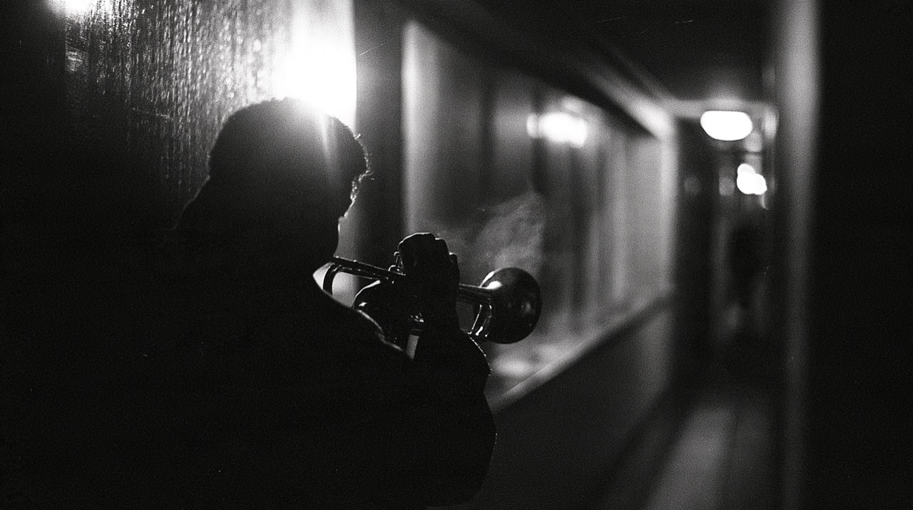
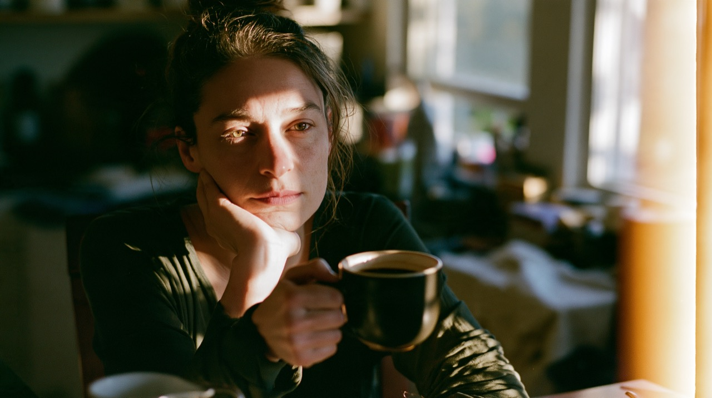
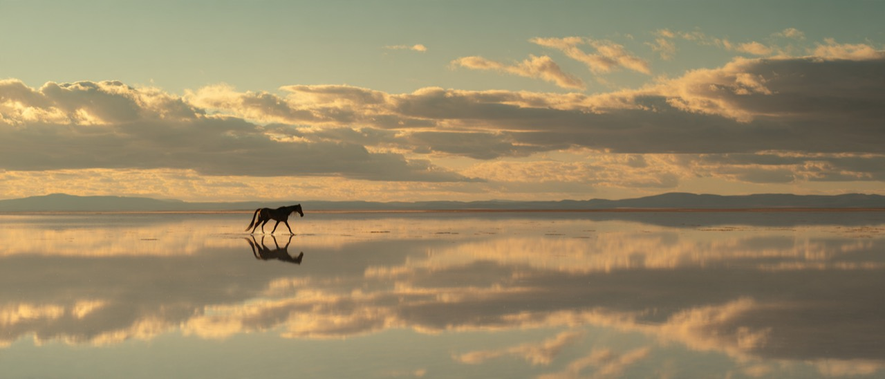
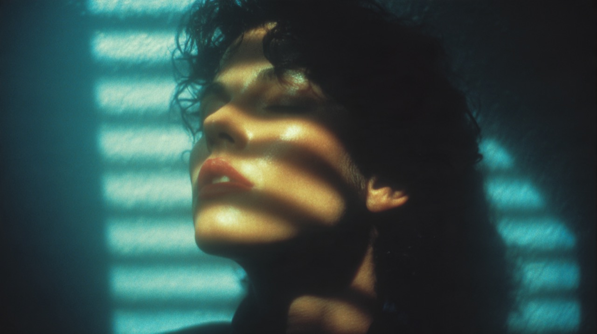
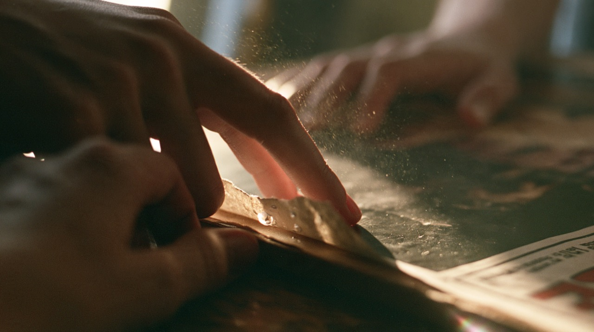
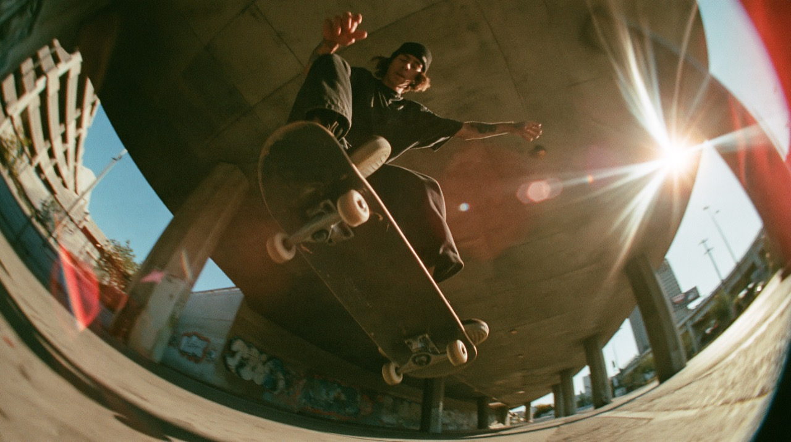

deep house
Seven stills, one world: poetic songwriting imagery staged in new-wave video language, in the house sound-tones — ready as book covers, editorial imagery, or music-video start frames. The tones are defined in the twin's how-to; the copy comes from the cognitive twin narrative.





